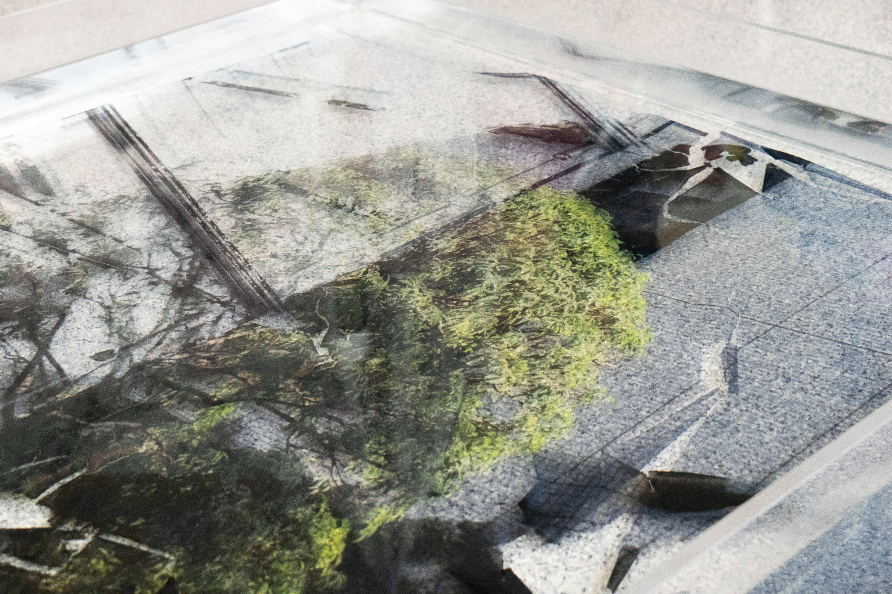
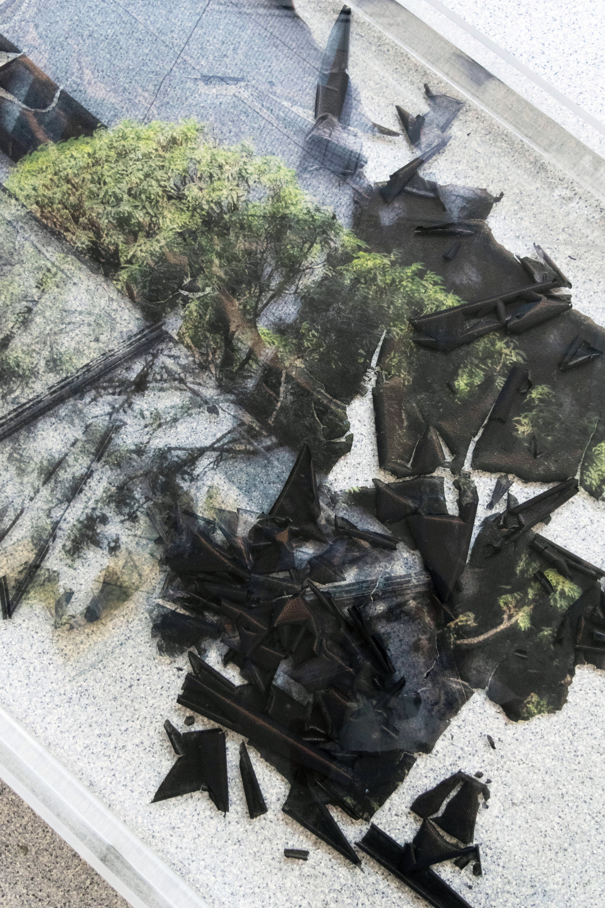
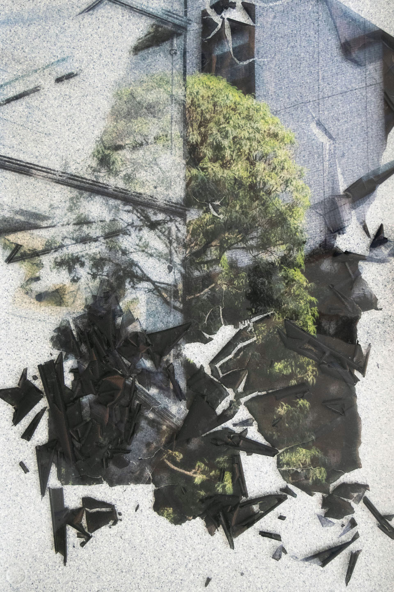
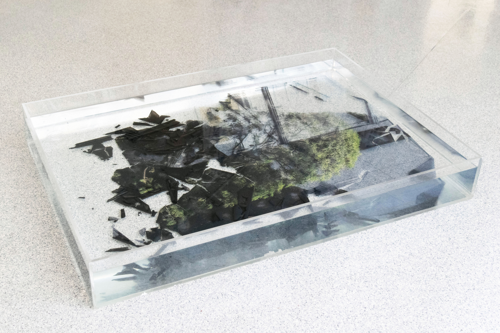

Archival

Archival
–
Installation, Photography
I see memory split into two different categories – factual memories
that are easy to recount and experiential memories
that are complex and boundless. The latter type of memory is expressed
through this bath of water. To understand this experience as a liminal,
boundless form, I began placing plotter prints of my experience in
Tokyo, Japan inside the bath, allowing the ink layer to separate from the paper.
The image becomes extremely delicate and fragile.
The process is my attempt to archive experiential memories.
The impossibility of capturing the ephemeral and the vast becomes physical.



